כאב שלא עובר?
עכשיו מגיעים לעומק.
דותן וגמן, מטפל ותיק בכאבי גב וכאב, מוסיף לקליניקה טכנולוגיה של גלי הלם ממוקדים. הגל מתכנס לנקודה בעומק הרקמה, ועשוי לסייע בהפחתת כאב כחלק מתוכנית מותאמת אישית.
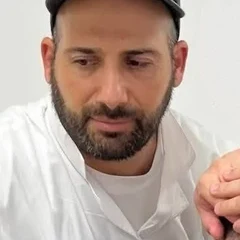
דותן וגמןמטפל ותיק בכאבים אורתופדיים ומגבלות תנועה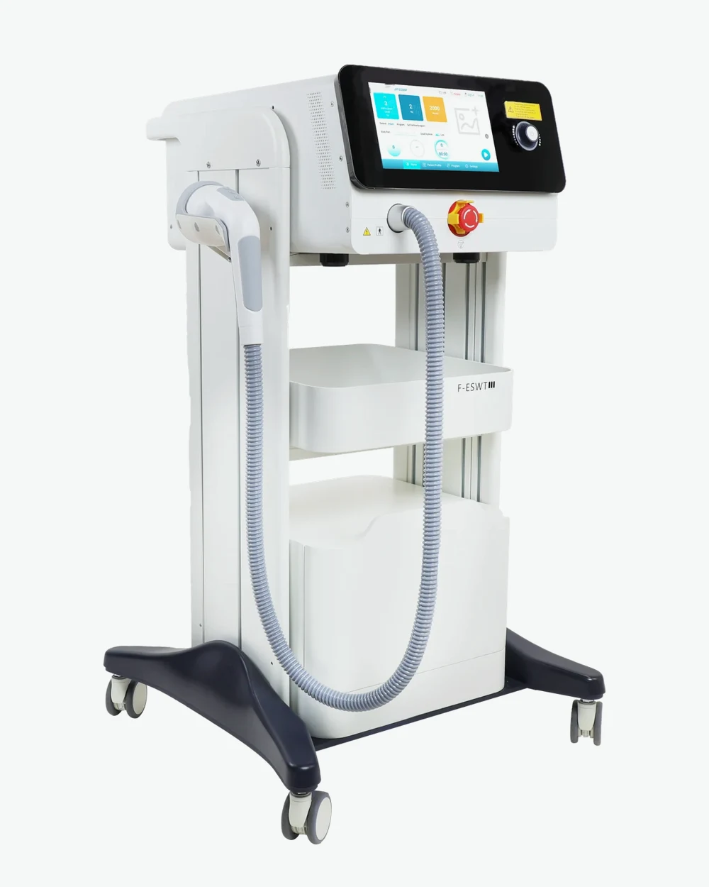
 בשיתוף I-Groupטכנולוגיית F-ESWT, מכשיר LGT-2520GP
בשיתוף I-Groupטכנולוגיית F-ESWT, מכשיר LGT-2520GP
דותן, ברוך הבא למשפחת הגלים הממוקדים. שמחים ללוות את הרחבת ארגז הכלים שלך בטכנולוגיה ממוקדת, לצד הניסיון הטיפולי שצברת. בהצלחה גדולה!
צוות I-Group Medicalמכירים את זה?
כאב שחוזר כל בוקר. משככים שכבר לא עוזרים. טיפולים שנותנים הקלה ליום־יומיים. גלי הלם ממוקדים הם עוד כלי, שמגיע ישר לאזור הבעיה.
- הכאב נמשך חודשיםכאב כרוני בגיד, במפרק או בשריר, שלא נרגע עם הזמן.
- הצעד הראשון בבוקר כואבעקב, דורבן או פסיה פלנטרית שהופכים כל הליכה למשימה.
- ההקלה לא מחזיקהאחרי עיסוי או תרופה הכאב חוזר, ורוצים לבדוק אפשרות נוספת.
- כתף שלא עולהכתף קפואה או הסתיידות שמגבילות הרמה, לבוש ושינה.
- רוצים לנסות בלי מחטיםטיפול חיצוני, בלי זריקות, בלי הרדמה ובלי חתך.
- רוצים מטפל שמכיר כאבלא רק מכשיר. אבחון, ידיים וניסיון של שנים.
איך עובד גל הלם ממוקד?
הגל נוצר מחוץ לגוף, מועבר דרך העור ומתכנס לנקודה בעומק שנבחר מראש. אפשר לחשוב על זה כמו עדשה שמרכזת אור לנקודה, רק שכאן מדובר בגלי לחץ אקוסטיים.
- יצירת הגל
סליל אלקטרומגנטי בראש הטיפול מייצר פולס קצר ואנרגטי.
- התכנסות
עדשה אקוסטית מכנסת את הגלים, כך שהם נפגשים בנקודה אחת.
- מוקד בעומק
דותן מכוון את עומק המוקד, מ־0 ועד 100 מ״מ, לפי מיקום הבעיה.
- תגובת הרקמה
לפי היצרן, הגל מעורר ברקמה תהליכים מכניים וביולוגיים שעשויים לסייע בהפחתת כאב ובתהליכי ריפוי.
גל ממוקדבקליניקה של דותן
הגלים מתכנסים לנקודה בעומק שנבחר. עיקר האנרגיה מגיע לאזור המטרה, גם כשהוא עמוק.
גל רדיאלי
הגל מתפזר מפני העור החוצה והעוצמה שלו נחלשת ככל שמעמיקים. מתאים בעיקר לאזורים שטחיים.
מה קורה ברקמה?
היצרן מתאר חמישה מנגנונים שבאמצעותם גל ההלם הממוקד פועל. כך זה נראה בשפה פשוטה.
אפקט מכני
הגל יוצר לחץ ומתיחה זעירים בין שכבות הרקמה.
קוויטציה
בועות מיקרוסקופיות נוצרות ומתמוטטות בנוזל שברקמה.
השפעה על כאב
לפי היצרן, הגל משפיע על קולטני הכאב ועל רגישות העצב.
זרימת דם
לפי היצרן, עידוד גורמי גדילה ויצירת כלי דם חדשים באזור.
רקמת עצם
לפי היצרן, אותות לתאי העצם כחלק מתהליך השיקום.
התיאור מבוסס על פרסומי היצרן. המטרה שהוא מגדיר: שיכוך כאב, תמיכה בתיקון הרקמה והפחתת דלקת, בהפרעות של שריר ושלד.
למה הטיפול עשוי לסייע?
גלי הלם ממוקדים משמשים בעולם במגוון רחב של בעיות כאב בגידים, במפרקים ובשרירים. אלה האזורים הנפוצים ביותר.
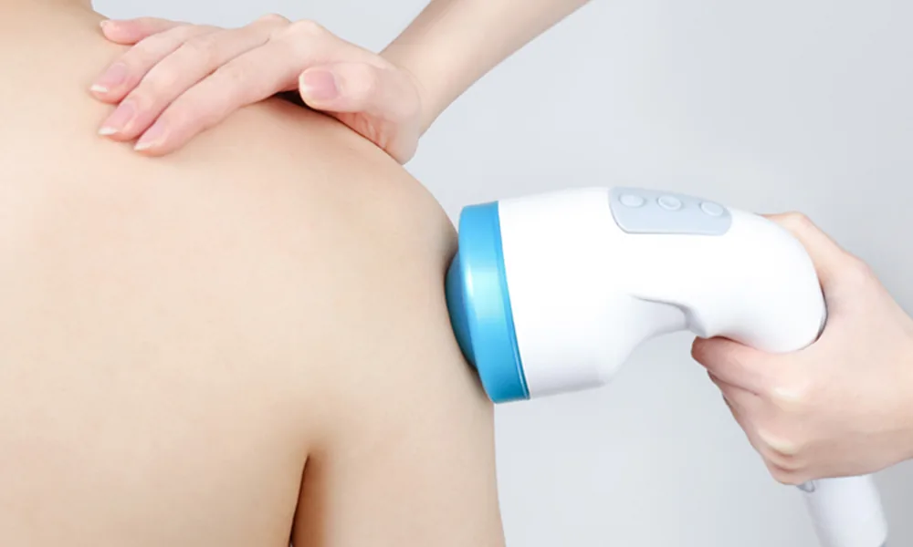
כתף קפואהFrozen shoulder
עשוי לסייע בכאב ובהגבלת התנועה בכתף.
הסתיידות בכתףCalcific tendinitis
משקעי סידן בגידי הכתף, שגורמים לכאב בהרמת היד.

מרפק טניסLateral epicondylitis
כאב בצד החיצוני של המרפק, באחיזה ובהרמה.
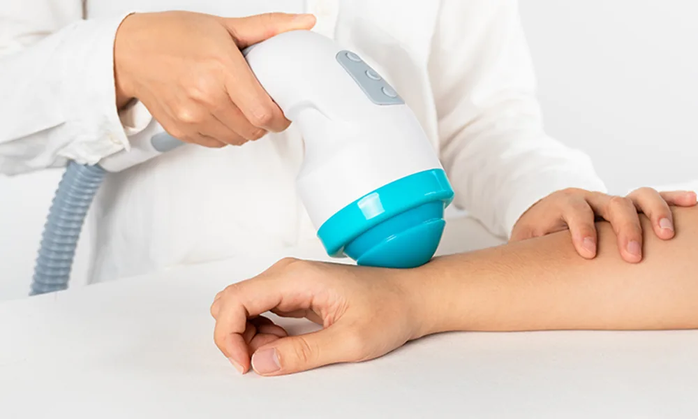
מרפק גולףMedial epicondylitis
כאב בצד הפנימי של המרפק, שמקרין לאמה.
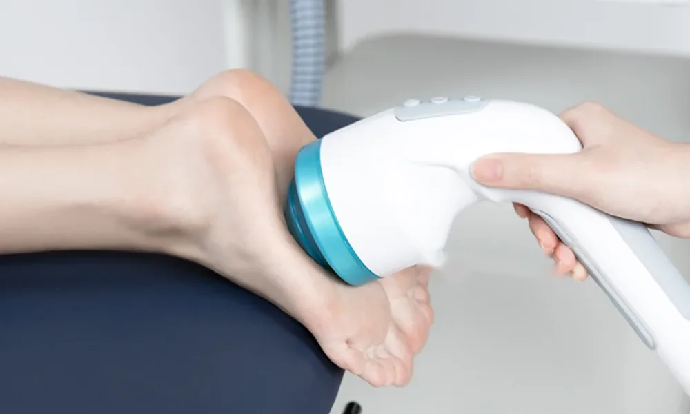
דורבן ופסיה פלנטריתPlantar fasciitis
כאב בעקב ובכף הרגל, במיוחד בצעדים הראשונים.
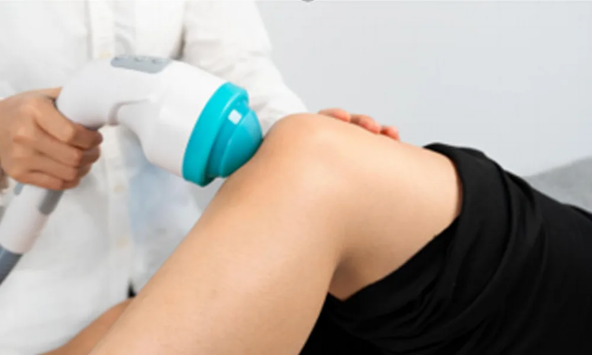
כאבי ברכייםKnee osteoarthritis
עשוי לסייע בכאב ברך שחיקתי ובגידים סביב הברך.
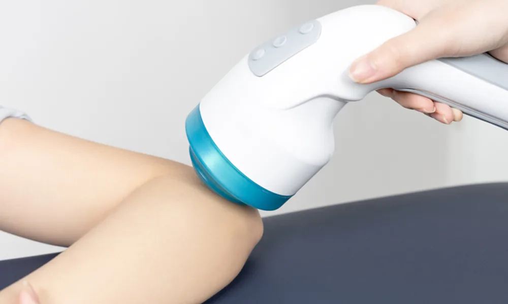
גיד אכילסAchilles tendinopathy
כאב ונוקשות בגיד שמעל העקב.
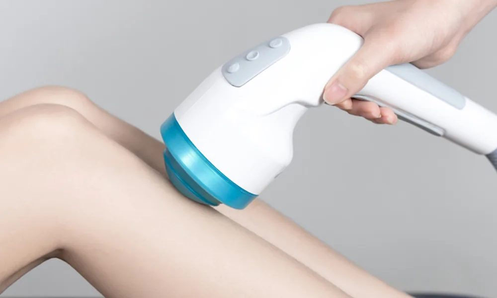
גב תחתון כרוניChronic low back pain
כחלק מתוכנית טיפול רחבה לכאב גב שנמשך זמן רב.
ההתאמה לטיפול נקבעת רק אחרי שיחה ובדיקה. הרשימה מבוססת על ההתוויות שמפרט היצרן ועל השימוש המקובל בגלי הלם, ואינה הבטחה לתוצאה. התוצאות משתנות מאדם לאדם.
איך נראה טיפול אצל דותן?
בלי הפתעות. מגיעים בבגדים נוחים, ומקבלים הסבר והנחיות אישיות להמשך.
- שיחה ואבחון
דותן שומע על הכאב, בודק את האזור ומוודא שאין מניעה לטיפול.
- איתור המוקד
מישוש וסימון הנקודה הכואבת, ומריחת ג׳ל שמעביר את הגל.
- כיוון המכשיר
בחירת עומק המוקד, התדירות ורמת האנרגיה, מהספרייה ומהניסיון.
- הטיפול
מרגישים דפיקות קצביות. העוצמה מותאמת לתחושה שלכם.
- מדידה ומעקב
מדרגים את הכאב לפני ואחרי, ורואים את ההתקדמות לאורך הסדרה.
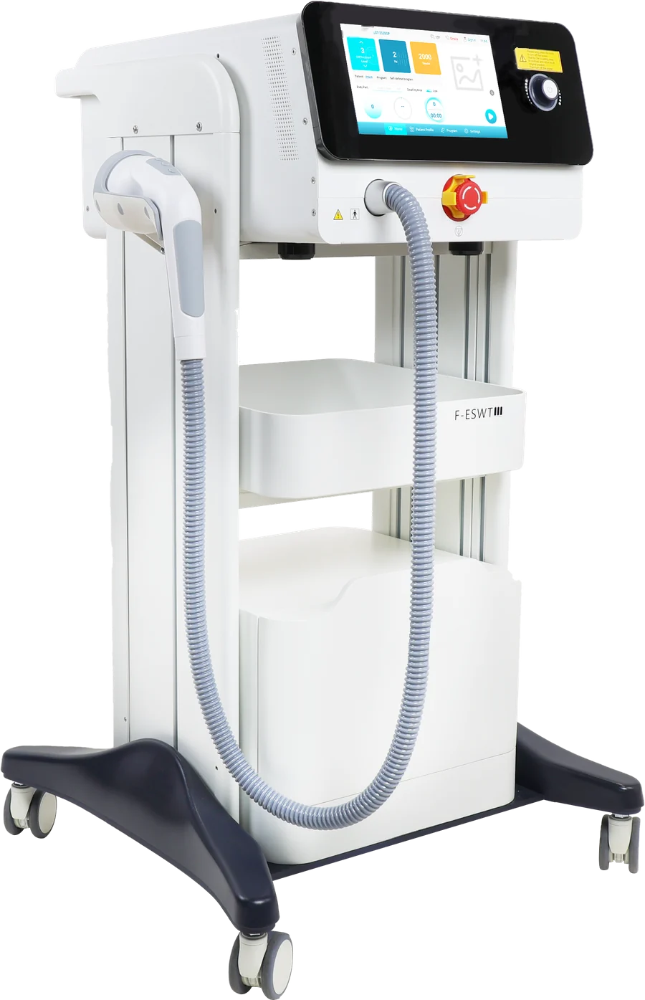
המכשיר שבקליניקה
דותן עובד עם LGT-2520GP של Longest Medical Devices, מכשיר גלי הלם אלקטרומגנטיים ממוקדים, שהגיע לקליניקה דרך I-Group, יחד עם הדרכה והסמכה להפעלת המערכת.
- עומק מוקד
- 0–100 מ״מ
- רמות אנרגיה
- נמוכה · בינונית · גבוהה
- תדירות
- 0.5–20 Hz
- תיעוד
- סולם כאב NRS
- אישורים
- אמ״ר · Health Canada
- בטיחות
- לחצן עצירת חירום
וגם: טיפול בפולסים אלקטרומגנטיים (PEMF)
לצד הגלים הממוקדים, דותן מטפל כבר היום במכשיר PEMF, פולסים אלקטרומגנטיים. שדה מגנטי פועם עובר דרך הגוף, באמצעות אביזר שמונח סמוך לאזור המטופל. הטיפול עשוי לסייע בהקלה על כאב כחלק מתוכנית מותאמת אישית.
- לא פולשני, בשכיבה או בישיבה נוחה
- אפשר לשקול שילוב עם גלי הלם, עיסוי ודיקור, לפי התאמה
- בדיקת התאמה אישית והתייחסות להתוויות נגד
ההתאמה נקבעת אחרי שיחה. גם כאן, התוצאות משתנות מאדם לאדם.
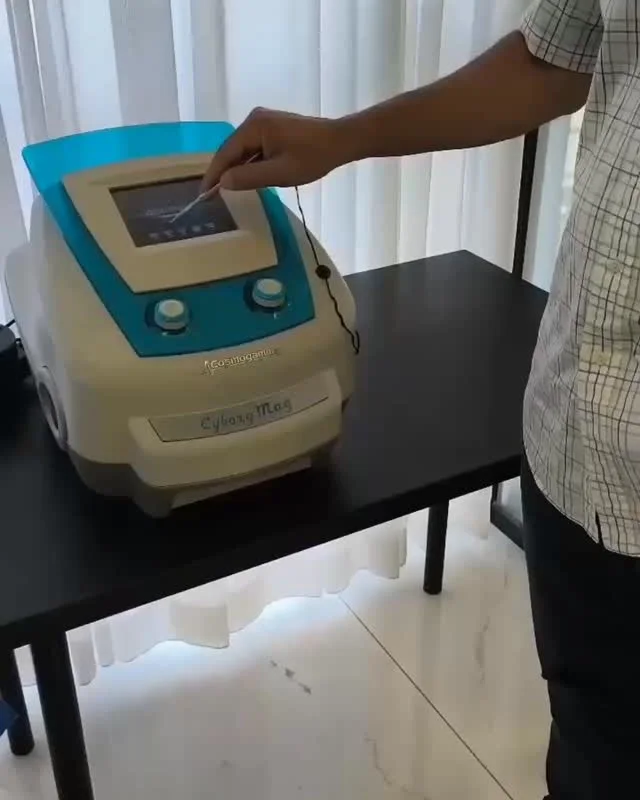
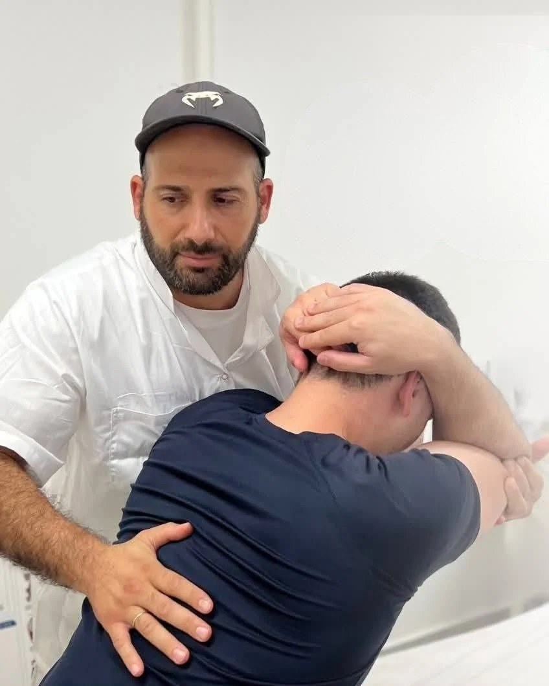
דותן וגמן. ניסיון של שנים, עכשיו גם גלים ממוקדים.
דותן הוא מטפל מוסמך בשיטות מגע, שמתמחה בכאבים אורתופדיים, בשיקום תנועה ובפציעות ספורט. הדרך שלו לטיפול התחילה בשטח: קרוב ל־20 שנה כמאמן אומנויות לחימה, שבהן פגש מקרוב פציעות של מתאמנים ושל עצמו, ומשם לשנים של עבודה טיפולית בקליניקה.
הגישה שלו: רפואה רב־תחומית לטיפול בכאב, ושילוב של טכנולוגיה מתקדמת עם טיפול ידני מקצועי. כל מטופל מקבל תוכנית אישית. גלי ההלם הממוקדים מצטרפים לארגז הכלים הקיים, ולא מחליפים אותו. הטיפולים בעברית ובאנגלית, ויש גם אפשרות לטיפולי בית.
- עיסוי רפואי
- עיסוי רקמות עמוק
- דיקור מערבי ואינטגרטיבי
- דיקור חשמלי
- דיקור יבש
- שיטות אוסטאופתיות
- כוסות רוח
- קינזיוטייפינג
- פולסים אלקטרומגנטיים (PEMF)
- גלי הלם ממוקדים
מה מטופלים כותבים על דותן
ביקורות אמיתיות שמטופלים פרסמו ב־Google ובפייסבוק, על הטיפולים של דותן באופן כללי ולא על גלי ההלם. החוויה של כל מטופל אישית, והתוצאות משתנות מאדם לאדם.
"אחרי שהייתי אצל הרבה מטפלים שלא הצליחו לעזור לי חבר סיפר לי על דותן וגמן הייתי אצלו 5 טיפולים והכל עבר פשוט קוסם תודה רבה מלך ממליץ בחום"
"מטפל בחסד! היו לי כאבי גב שבקושי זזתי ואחרי טיפול הצלחתי לזוז ובלי משחות ובלי תרופות. תודה ענקית דותן"
"...מקצועי, נעים, אוירה טובה וידיים של אומן, מגיע לנקודות בגוף שלא חשבתי אי פעם שגם שם תפוס..."
"ממליצה מאוד מאוד!!! מקצועי בעל ידע רחב,נעים,עושה את העבודה בשקט ובנועם. שווה להגיע."
בשיתוף פעולה עם I-Group
I-Group Medical מתמחה בפתרונות רפואיים למכוני כאב ושיקום בישראל. החברה הביאה לקליניקה של דותן את מכשיר גלי ההלם הממוקדים, ומלווה אותו בהדרכה, בהסמכה ובשירות.
שאלות ששואלים את דותן
לא מצאתם תשובה? אפשר לשאול את דותן ישירות בוואטסאפ.
מה זה גלי הלם ממוקדים?
גלי קול אנרגטיים שנוצרים מחוץ לגוף ומתכנסים לנקודת מוקד אחת בעומק הרקמה. במכשיר שבקליניקה אפשר לכוון את עומק המוקד בין 0 ל־100 מ״מ, כך שהאנרגיה מגיעה לאזור שבו נמצא מקור הכאב.
האם הטיפול כואב?
מרגישים דפיקות קצביות באזור הטיפול. אצל חלק מהמטופלים יש אי־נוחות, בעיקר באזור רגיש. דותן מתאים את רמת האנרגיה לתחושה שלכם ואפשר לעצור בכל רגע.
כמה טיפולים צריך?
זה אישי. מספר הטיפולים והמרווח ביניהם נקבעים אחרי האבחון, לפי האזור, משך הבעיה והתגובה לטיפול הראשון.
מתי מרגישים שינוי?
אין תשובה אחת. יש מי שמרגישים הבדל כבר אחרי הטיפולים הראשונים ויש מי שצריכים יותר זמן, ויש מי שהטיפול לא מתאים להם. התוצאות משתנות מאדם לאדם.
אילו תופעות לוואי אפשריות?
לפי היצרן ייתכנו באזור הטיפול אדמומיות, נפיחות, שטף דם קטן, עקצוץ או החמרה זמנית של הכאב. בדרך כלל זה חולף מהר. תגובה שנמשכת או מחמירה מחייבת פנייה לרופא.
למי הטיפול לא מתאים?
לפי היצרן, בדרך כלל לא מטפלים בהריון, בהפרעות קרישה, בזיהום פעיל באזור, או סמוך לקוצב לב ולמכשיר מושתל אחר. גם אוסטאופורוזיס חמורה או גידול באזור עשויים למנוע טיפול. לכן כל טיפול מתחיל בשיחה ובבדיקת התאמה.
אפשר לשלב עם הטיפולים האחרים של דותן?
לפי היצרן, במקרים רבים אפשר לשלב גל ממוקד עם טיפולים אחרים ועם תרגול שיקומי. דותן בונה את התוכנית לפי המצב שלכם, ולפעמים משלב אותו עם עיסוי רפואי, דיקור או טיפול בפולסים אלקטרומגנטיים.
מה ההבדל בין גל ממוקד לגל רדיאלי?
גל רדיאלי מתפזר מפני העור החוצה, והעוצמה שלו נחלשת ככל שמעמיקים. גל ממוקד מתכנס לנקודה בעומק שנבחר מראש, כך שעיקר האנרגיה מגיע לאזור המטרה.
איפה הקליניקה ואיך קובעים?
הקליניקה בקבוצת שילר (גן שלמה), ליד רחובות. כותבים לדותן בוואטסאפ או משאירים פרטים בטופס, והוא חוזר אליכם לתיאום.
ספרו לדותן מה כואב.
שלוש שורות, וההודעה נפתחת אצלכם בוואטסאפ, מוכנה לשליחה. וממשיכים את השיחה ישירות עם דותן.
- שיחה ראשונה לבדיקת התאמה
- בלי טפסים ארוכים: שם, טלפון ומה כואב
- קבוצת שילר (גן שלמה), ליד רחובות